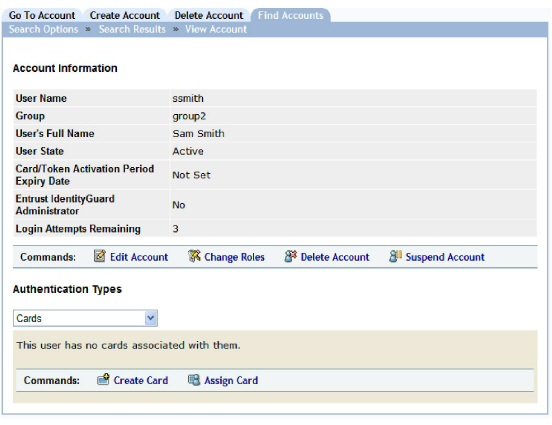
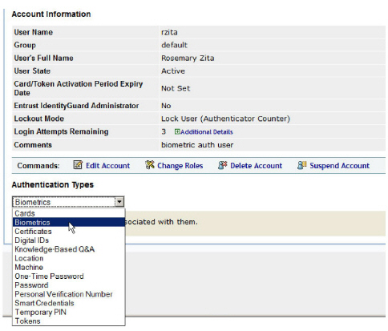

|
IdentityGuard Server 11.0 Administration Guide |
|
IdentityGuard Server 11.0 Administration Guide |
An administrator can find and display the information used to generate a user’s authentication challenge, including card data, knowledge-based questions, and machine secrets.
The following procedure shows how an administrator can display the challenge or authentication methods that Entrust IdentityGuard currently has stored for a user.
You can also search for users based on the last time they authenticated.
To search for a user’s authentication information
1. Log in to the Administration interface (Logging in and out of the Administration interface).
2. In the main menu, click User Accounts.
The User Accounts page appears.
3. Find a specific user in one of two ways:
● use the Go To Account tab (see To search for information about one user)
● use the Find Accounts tab (see To search for information about one or more users)
The View Account page appears.

4. Under Authentication Types, click any of the authentication categories (such as Cards) on the drop-down list to view the authentication information for that category.

● For more information about a user’s assigned cards, see Administering assigned grid cards.
● For more information about a user’s biometrics, see Administering biometrics
● For more information about a user’s certificates, see Administering user certificates.
● For more information about a user’s knowledge-based questions, see Administering knowledge-based authentication.
● For more information about a user’s IP/Geolocation information, see Configuring RBA policies and Managing the expected location lists.
● For more information about a user’s machine secrets, see Using machine authentication.
● For more information about a user’s one-time password, see Administering out-of-band one-time passwords.
● For more information about a user’s password, see Creating and administering passwords.
● For more information about a user’s personal verification number, see Creating and administering personal verification numbers.
● For more information about a user’s temporary PIN, see Administering temporary PINs.
● For more information about a user’s assigned tokens, see Administering assigned tokens .
● For more information about a user’s smart credentials, see “Administering smart credentials” in the Entrust IdentityGuard Smart Credentials Guide.
● For more information about a user’s digital IDs, see “Creating a CA and digital ID configuration for smart credentials” in the Entrust IdentityGuard Smart Credentials Guide..